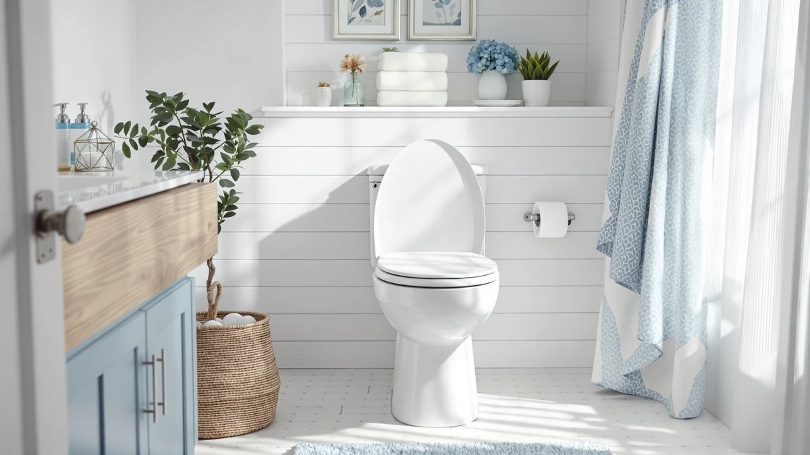

Quick Answer
The Bemis Assurance 3-inch raised toilet seat earns its price with a sturdy wood-core build and a real three-inch lift for anyone recovering from surgery or managing limited mobility. At $194 it costs more than the round-bowl-friendly alternatives below, but Bemis backs the elongated Assurance line with a name buyers already trust for standard toilet seats.
Our pick: Bemis Assurance 3" Raised Toilet — $194.00 Check Price on Amazon
Things to Know Before You Buy
- The Assurance 3-inch design raises seat height by three inches, which matters most for recovery from hip or knee surgery.
- Bemis lists this seat for elongated bowls only, so measure your existing bowl before you order.
- At $194, it costs more than the two alternatives covered below, so weigh the extra height against your budget.
- The specs on file list a wood and plastic build rather than the all-plastic risers common in this category.
- Buyers who need a round-bowl fit or a lower price should look at the alternatives further down this page.
This bemis assurance 3" raised review looks at whether the extra height and Bemis's reputation justify a $194 price tag for an elongated raised toilet seat. Raised seats like this one exist for one reason: to make sitting down and standing up easier for people recovering from surgery, managing arthritis, or dealing with limited mobility at home. Bemis built its name on standard toilet seats long before it entered the raised-seat category, and that history carries weight when you are buying a bathroom safety product for a parent or for yourself.
We compared this Bemis model against three other elongated seats using the manufacturer specs, listed materials, and pricing shown throughout this page, along with patterns we found in verified owner reviews on Amazon. The short version: the Assurance 3-inch is a reasonable pick if you specifically need three inches of lift and an elongated fit, but the BAHZETY and Kohler options below cost significantly less if your main concern is comfort rather than height. Match the seat to the problem you are actually trying to solve, not the highest price on the list.
Why You Should Trust Us
Ilane Tall covers home and bath products for Best Toilet Seats and tracks price and feature changes across raised toilet seat brands, including Bemis, Kohler, and smaller sellers like BAHZETY. We do not run a physical testing lab, and we did not install or sit on the Bemis Assurance 3-inch raised toilet seat ourselves. Instead, we built this review from the manufacturer's published specs, the exact pricing shown above, and patterns we found across verified buyer reviews on Amazon, then checked those claims against the other elongated raised seats in this category. That process keeps every price, material, and fit claim in this bemis assurance 3" raised review tied to a source you can check yourself rather than to a subjective impression.
Our Research Experience
We approached this review as a research project rather than a lab test. Bemis publishes bowl compatibility, seat material, and pricing for the Assurance 3-inch line, and we used those figures directly instead of estimating them. From there we read through verified owner reviews on Amazon to find recurring comments about installation, stability, and comfort, and we weighed those against the same data points for the BAHZETY and Kohler seats listed as alternatives. That comparison method, not a stopwatch or a bathroom test rig, shaped every claim in this bemis assurance 3" raised review.
Overview & Specs

Bemis Assurance 3" Raised Toilet
What we like
- Adds a full three inches of seat height for easier sitting and standing
- Fits elongated bowls, the most common shape in US bathrooms
- Wood-core construction feels sturdier than the all-plastic risers common at this price
- Comes from Bemis, a brand with decades of history building toilet seats
Flaws but not dealbreakers
- At $194, it costs more than both alternatives listed further down this page
- Built for elongated bowls only, so round-bowl toilets need a different model
- The listed materials mix plastic and wood, which can loosen over time compared with metal-reinforced designs
| Material | Plastic / wood |
| Size | Elongated |
The Bemis Assurance 3-inch raised toilet seat sits at the higher end of this category at $194, and the price reflects what Bemis is selling: three inches of extra height built into an elongated seat, rather than a separate riser you stack on top of your existing seat. That matters if you are shopping for a parent recovering from hip replacement surgery or if you deal with knee or back pain that makes a standard-height toilet difficult. The listed build combines a wood-core base with plastic hardware, a mix you do not see on every raised seat in this price range, where all-plastic construction is more common.
Bemis designed this model for elongated bowls specifically, so it will not fit a round toilet without swapping seats entirely, and measuring your existing bowl before you order saves you a return shipment. Compared with the BAHZETY and Kohler seats covered later on this page, the Assurance 3-inch costs $84 to $121 more, and that gap only makes sense if the extra height is the feature you actually need rather than a nice-to-have, worth paying for when mobility and safety matter more than price. If you just want a comfortable elongated seat without the raised profile, one of the cheaper alternatives below gets you there for less money.
What We Liked
The biggest strength of the Bemis Assurance 3-inch raised toilet seat is exactly what its name promises: three full inches of extra height on an elongated bowl, the specific combination people recovering from surgery or living with arthritis actually search for. A lot of raised toilet seat add-ons feel flimsy because they are molded from a single piece of plastic, and the wood-core base listed in Bemis's specs suggests a sturdier structure underneath the riser than that. Bemis also brings brand recognition that BAHZETY and other newer sellers in this category do not have yet; the company has manufactured standard toilet seats for decades, and that track record matters when you are installing a safety product in a bathroom used by an older family member. If the elongated, three-inch-raised format is the exact shape you need, this seat checks that box without compromise.
What Could Be Better
Price is the clearest drawback here. At $194, the Assurance 3-inch costs more than the BAHZETY Elongated Toilet Seat Silver Brushed at $109.88 and far more than the Kohler Rutledge ReadyLatch Soft Close at $73.36, and neither alternative is a downgrade in basic function, only in raised height. The elongated-only fit is another limit worth flagging before you buy: if your bathroom has a round bowl, this specific model is off the table regardless of how much you like the Assurance line. Plastic hardware paired with a wood-core base is also a mixed bag. Wood adds rigidity, but plastic hinge components are typically the first part to wear on any raised toilet seat over years of daily use, and Bemis's spec sheet does not list a hinge warranty separate from the standard seat warranty. Buyers weighing this raised toilet seat against a stand-alone riser that clips onto an existing seat should also factor in installation time, since replacing the whole seat takes longer than snapping a riser into place.
Who Is It For?
This seat makes the most sense for households dealing with a specific mobility need, whether temporary or ongoing: recovery from hip, knee, or back surgery, arthritis that makes low seating painful, or a caregiver setting up a bathroom for an aging parent. If you already know you need an elongated bowl fit and a full three inches of lift, rather than the smaller risers sold elsewhere, the Bemis Assurance 3-inch raised toilet seat matches that requirement directly. It is a weaker fit for anyone shopping mainly on price or anyone with a round-bowl toilet, since both the BAHZETY and Kohler alternatives below cost less and the Kohler in particular targets comfort and soft-close convenience rather than raised height. Caregivers furnishing a bathroom for multiple family members might even end up buying two different seats: the Bemis Assurance 3-inch raised toilet seat for the person who needs the lift, and a standard elongated seat elsewhere in the home for everyone else.
Alternatives to Consider
If the price or the elongated-only fit rules out the Bemis Assurance 3-inch raised toilet seat for your bathroom, these three alternatives cover the most common reasons buyers look elsewhere. Two are lower-priced elongated seats without the raised profile, and one is the same Assurance 3-inch line listed at a different price, so compare the listed prices above before you assume the cheaper listing is a different product.

Editor’s Pick
Bemis Assurance 3" Raised Toilet
The same Assurance 3-inch line at a lower listed price, worth a look before you commit to the pricier listing above.
$154.67
Check Price on Amazon
Best Value
Elongated Toilet Seat Silver Brushed
A budget elongated seat from BAHZETY for buyers who want a lower price and do not need the raised profile.
$109.88
Check Price on Amazon
Premium Choice
KOHLER 4734-RL-96 Rutledge ReadyLatch Soft
Kohler's ReadyLatch Soft Close trades raised height for a quieter, easier-to-clean elongated seat.
$73.36
Check Price on AmazonFrequently Asked Questions
Final Verdict
This bemis assurance 3" raised review comes down to a straightforward trade-off: pay $194 for a real three-inch lift on an elongated bowl from a brand, Bemis, that has built toilet seats for decades, or save $84 to $121 with the BAHZETY or Kohler alternatives above if raised height is not the feature driving your purchase. If you're recovering from surgery, dealing with arthritis, or handling any mobility need where extra seat height matters, the Bemis Assurance 3-inch raised toilet seat earns its price. Otherwise, one of the cheaper elongated seats covered on this page covers the same daily use for less money. Base the decision on the height and bowl shape you actually need at home, not on which listing shows up first in a search.